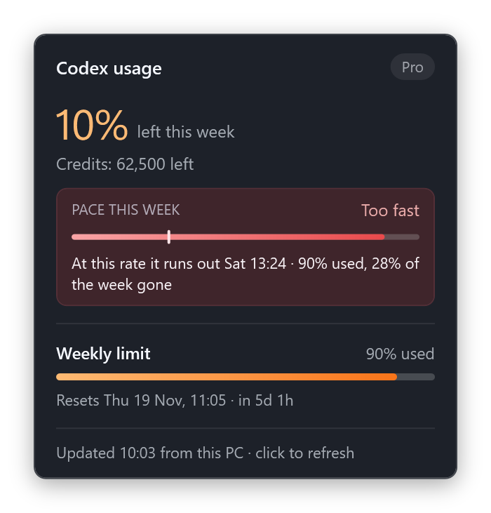
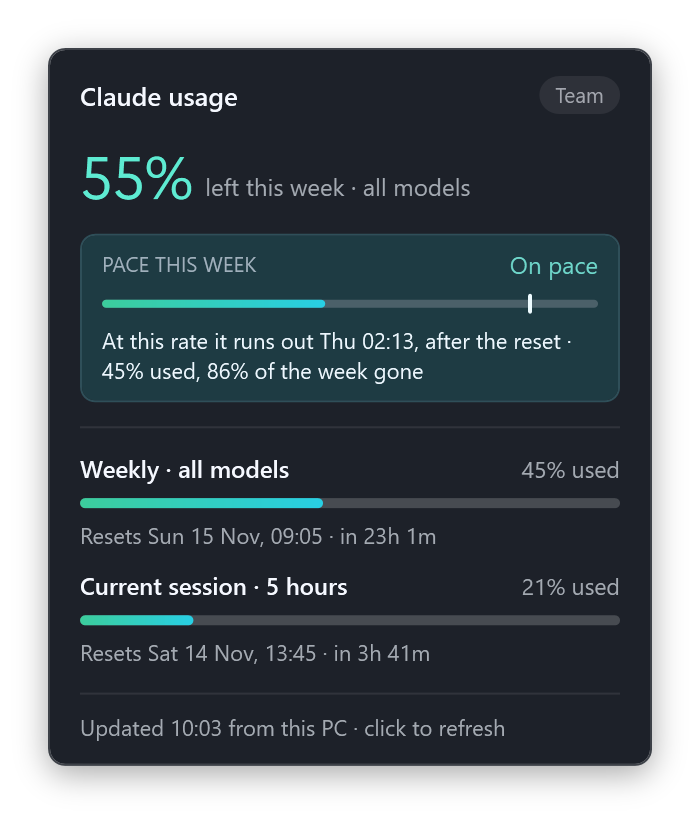
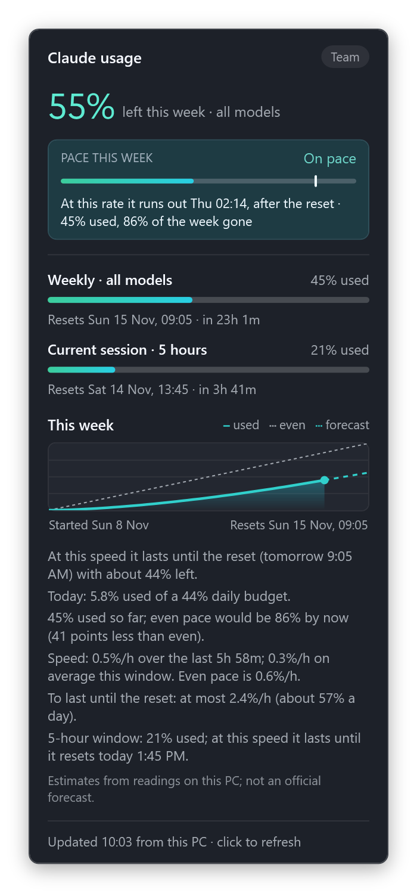
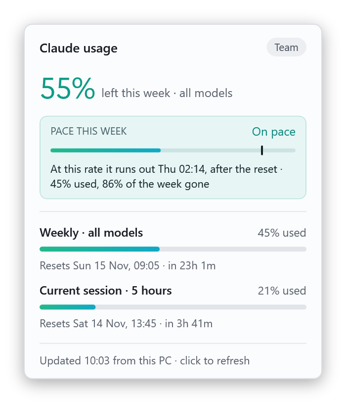
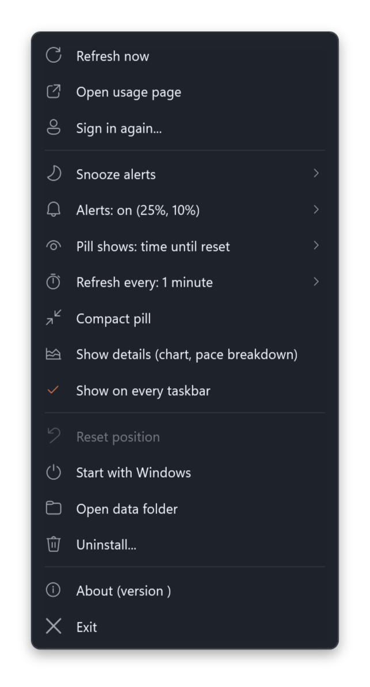

Your Claude and Codex limits, always on the taskbar
Two small widgets show how much of your weekly allowance is used, whether you are on pace, and the exact time it runs out at your current speed. They run on your PC only: no server, no telemetry, no sign-up.
Latest release · works with Claude Pro, Max, Team and Enterprise, and ChatGPT plans with Codex · On a Mac? Get the Claude menu-bar app


Everything you need to pace your week
Glance at the pill, hover for the card, right-click for settings. Each widget works on its own; install one or both.
Weekly allowance at a glance
A ring shows the share used, next to the time until the weekly reset. The edge turns orange or red when you are running low.
Pace forecast with a finish time
Your recent speed predicts when the allowance runs out: before the reset is Too fast, just after is Cutting close, later is On pace.
Every limit, one card
Weekly, the 5-hour session and per-model limits, each with its bar and reset time. Credits and extra usage show too when your plan has them.
Alerts you can snooze
Windows notifications fire at 75% and 90% used, at the limit, and when you are on track to run out early. Snooze them for an hour, until morning or until the reset.
Private by design
Your sign-in is read only on your PC and sent only to the vendor's own usage endpoint. The token is never logged, cached or shared.
Feels native on Windows 11
Light and dark themes, per-monitor DPI, every taskbar on multiple monitors, and the pills hide while a full-screen app is in front.
Know when you'll run out, not just how much is left
The pace box compares your use with an even spread over the week. A marker shows how much of the week has gone, and the line underneath gives the time you will hit the limit at your current speed.
- On pace: at this speed the allowance lasts past the reset.
- Cutting close: it lasts, but with under 5% to spare.
- Too fast: it runs out before the reset. The card says exactly when, and an alert warns you once.

Light or dark, it follows Windows
Right-click a pill for everything else: refresh, sign in again, snooze, alert thresholds, what the pill shows, refresh interval, compact mode, details, start with Windows and uninstall.


Install in a minute
You need Windows 10 or 11 and its built-in Windows PowerShell 5.1. There is nothing else to install and no admin rights are needed. Sign in to Claude Code (for the Claude widget) or the Codex app or CLI (for the Codex widget) on the same PC first.
Download and unzip
Get ai-usage-taskbar-widgets.zip from the latest release and unzip it anywhere, for example to your Downloads folder.
Double-click the installer for each widget you want
In the unzipped folder, double-click Install Claude widget.cmd and/or Install Codex widget.cmd. If Windows asks about a file from the internet, choose Run (or More info → Run anyway).
Prefer a terminal? Open the folder in one (Windows 11: right-click an empty spot → Open in Terminal; Windows 10: Shift + right-click → Open PowerShell window here) and paste:
powershell -NoProfile -ExecutionPolicy Bypass -File .\claude-usage-widget\install.ps1powershell -NoProfile -ExecutionPolicy Bypass -File .\codex-usage-widget\install.ps1Done
The pill appears on the taskbar right away and starts with Windows from now on. Running the installer again updates the widget and keeps your settings. To remove it, right-click the pill and choose Uninstall….
On a Mac? The Claude widget also comes as a native menu-bar app for macOS 13 or later. Install it with three Terminal commands.
What it reads, and where it goes
A small collector runs in a hidden PowerShell process every one to two minutes. This is all it touches.
| Claude widget | Codex widget | |
|---|---|---|
| Sign-in it reads | %USERPROFILE%\.claude\.credentials.json | %USERPROFILE%\.codex\auth.json |
| Only server it calls | api.anthropic.com usage endpoint | chatgpt.com usage endpoint |
| Backup source | Claude Code's own /usage command | The Codex CLI |
| Stored on your PC | Settings, 15 days of usage readings for the pace forecast, which alerts were shown, and a short log, in %LOCALAPPDATA% | |
- Tokens are never logged, cached, or passed on a command line
- It never signs in or edits your credentials; renewal goes through the official CLIs
- No telemetry, no analytics, no account
- Rate limits back off on their own, from 2 up to 30 minutes
Questions
Does checking usage use up my allowance?
No. The widgets read the same usage numbers the Claude and Codex apps show. The Claude backup source runs Claude Code's local /usage command, which sends no AI request.
Is this an official Anthropic or OpenAI tool?
No. It is made by Solarity AI and isn't affiliated with Anthropic or OpenAI. The usage endpoints it reads are the ones the official apps use; they aren't public APIs and may change. If one does, the widget says so instead of showing wrong numbers.
Is there a Mac version?
Yes, for the Claude widget: a native menu-bar app for macOS 13 or later with the share used, the pace and alerts. It builds on your Mac with Apple's Command Line Tools; the macOS guide has the commands. Run claude once in Terminal to sign in to Claude Code first. Codex is Windows-only for now.
Why does the installer use -ExecutionPolicy Bypass?
Windows blocks unsigned scripts by default. The flag applies to that one command only; it changes no system setting and needs no admin rights.
How accurate is the run-out time?
It is an estimate from readings taken on your PC. It uses your speed over the last few hours, or the week's average early on, so it moves as your use changes. It isn't an official forecast.
The pill says "sign in needed" or "not up to date"
For sign-in, right-click the pill and choose Sign in again; the widget refreshes when the sign-in window closes. "Not up to date" means the usage service is rate limiting; the widget retries by itself, or choose Refresh now.
Stop guessing how much you have left
Free for Windows 10 and 11. Install one widget or both in a minute.